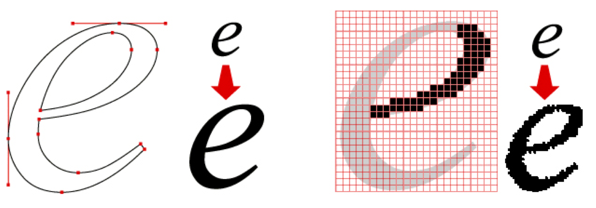

Compressietechnieken zijn methoden die worden gebruikt om de grootte van gegevens te verminderen zonder het verlies van de informatie.
Ze worden veel gebruikt met digitale gegevensopslag en -overdracht om efficiëntie te verbeteren, opslagruimte te besparen en om bestanden sneller over te zetten.
Compressie wordt in de computerwereld veel gebruikt om bestanden kleiner te maken.
Het helpt bij het besparen van opslagruimte en het versnelt het verzenden van gegevens via het internet.
Het is alsof je een foto naar een vriend stuurt, maar in plaats van de hele foto te sturen, stuur je een beschrijving van de foto en instructies om deze opnieuw samen te stellen zodra je vriend het bericht ontvangt.
Tekstcompressie is het slim inpakken van woorden om ruimte te besparen. Het is een techniek waarmee we herhaalde woorden of onnodige details uit een tekst kunnen halen, waardoor de tekst kleiner wordt. Hierdoor kunnen we tekstbestanden efficiënter opslaan en sneller delen via bijvoorbeeld het internet.
Beeld wordt opgeslagen door het in heel veel kleine gekleurde vakjes te verdelen, die we pixels noemen.
Elk vakje heeft een specifieke kleur, zoals rood, groen of blauw. Deze kleuren worden opgeslagen als nummers in de computer. Bijvoorbeeld, rood kan worden opgeslagen als het nummer 255, groen als 128, en blauw als 0. De computer bewaart deze nummers voor elk pixel in de afbeelding, zodat hij weet welke kleur elk pixel moet zijn.
Als je naar de afbeelding kijkt op je scherm, vertelt de computer aan de pixels op het scherm welke kleuren ze moeten laten zien.
Geluid wordt opgeslagen door het om te zetten in digitale gegevens.
Dit gebeurt door regelmatig monsters van het geluid te nemen, wat je sampling noemt.
De sample rate geeft aan hoe vaak deze monsters worden genomen per seconde. Hoe hoger de sample rate, hoe meer details er worden vastgelegd van het oorspronkelijke geluid.
Probeer het voor je te zien als het maken van een film met foto's; hoe meer foto's per seconde, hoe vloeiender de film zal lijken.
Bitmapafbeeldingen gebruiken kleine gekleurde punten (pixels) en worden gebruikt voor foto's, maar verliezen kwaliteit als je de afbeelding vergroot.
Vectorafbeeldingen zijn gebaseerd op wiskundige vormen en kunnen eindeloos worden vergroot zonder dat ze kwaliteit verliezen.
Het verschil tussen bitmap- en vectorafbeeldingen is dus dat bitmapafbeeldingen hun kwaliteit verliezen als je inzoomt en bij vectorafbeeldingen gebeurt dit niet.
